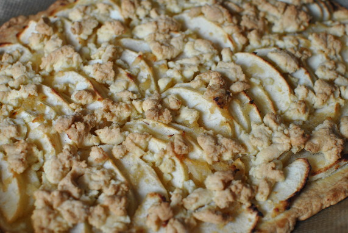

Apfel-Streuselkuchen

- Zubereitung: ca. 40 Minuten
- Backzeit: ca. 45 Minuten
Zutaten
- 400 g Mehl
- 200 g weiche Butter und Fett für die Form
- 70 g Zucker
- 1 Ei
- 600 g Äpfel (z. B. Elstar)
- 50 ml Apfelsaft
- 1 Zimtstange
- 1 Vanilleschote
- 1 Sternanis
- 1 Prise Salz
- 3 bis 4 EL Zucker
- Saft einer Zitrone
Zubereitung
- Aus dem Mehl, der weichen Butter, den 70 g Zucker und dem Ei rasch einen geschmeidigen Teig kneten. Den Teig in Frischhalte-Folie wickeln und circa 20 Minuten kalt stellen.
- Für den Belag die Äpfel entkernen, schälen, vierteln, und in Spalten schneiden. 100 g der Apfelspalten zusammen mit dem Apfelsaft, der Zimtstange, der Vanilleschote, der Sternanis und der Prise Salz aufkochen und in 2 bis 3 Minuten weich dünsten.
- Die Gewürze entfernen und die Apfelmasse fein pürieren. Die Masse mit Zucker abschmecken und abkühlen lassen. Im Anschluss daran die Masse mit den restlichen Apfelspalten und dem Zitronensaft mischen.
- Den Backofen auf 180° Celsius (Umluft: 160° Celsius) vorheizen. Zwei Drittel des Teigs gleichmäßig auf dem Boden der gefetteten Backform verteilen und gut andrücken. Mit einer Gabel den Boden mehrfach einstechen und den Belag daraufgeben.
Den übrigen Teig als Streusel darübergeben und den Kuchen im Ofen circa 45 Minuten backen.